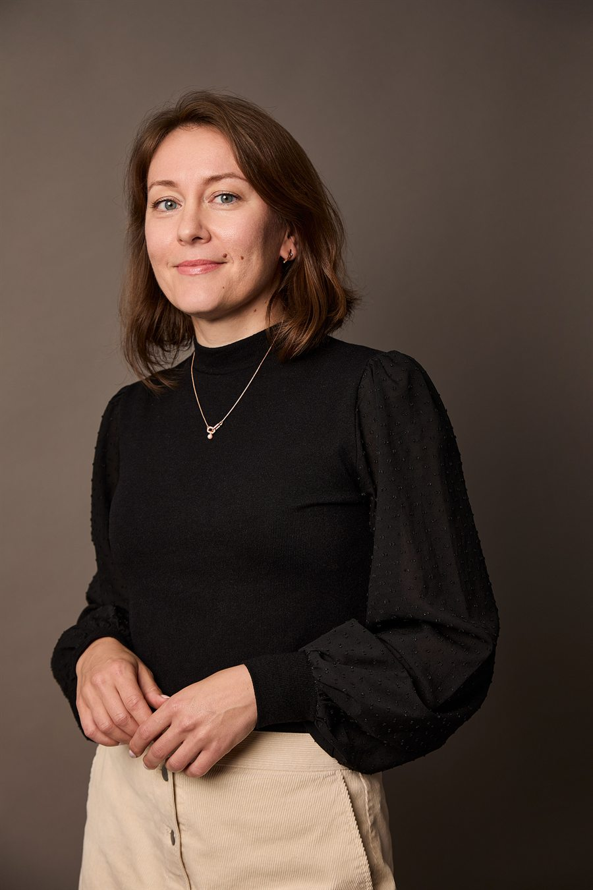

AI, democracy,
and human values
Olya's current work concerns AI and democracy in different contexts. Predominantly, her research orbits the AI DeMoS Lab where she supervises PhD projects at the intersection of technology, society, and ethics.
Olya is also co-supervising responsible AI development projects in large consortia, such as the Dutch National ELSA Lab AI MAPS (with the Dutch police) and the EUR-Erasmus MC-TU Delft Convergence Flagship project ProtectME — focused on AI and mental wellbeing of adolescents.

Supervision
Olya supervises PhD projects at the intersection of technology, society, and ethics. These are the current themes.
- The interrelation of synthetic media and trust
- Political subjectivity and social media
- Digital phenotyping in mental healthcare
- Critical engagement with AI systems in the public sphere
- Adversarial Machine Learning to facilitate private deliberation online
Research projects
TU Delft
AI DeMoS Lab
The AI, Democracy, and Society Lab investigates how AI systems reshape democratic processes, public deliberation, and political subjectivity. Co-directed at TU Delft, the lab brings together philosophers, social scientists, and engineers.
Visit the labDutch National Consortium
ELSA Lab AI MAPS
The Dutch National ELSA Lab on AI and Meaningful Accountable Predictive Policing Systems. This consortium investigates ethical, legal, and societal dimensions of AI deployment by the Dutch police.
EUR-Erasmus MC · TU Delft
ProtectME
The EUR-Erasmus MC and TU Delft Convergence Flagship project on AI and mental wellbeing of adolescents. Olya co-supervises responsible AI development in this clinical and societal context.
Visit the projectEthics arises not only within the parts of a technology, but where they meet.
Research philosophy
Connecting philosophy
to practice
Olya is an interdisciplinary researcher. Philosophically, her work is inspired by (post)phenomenology, Dewey's pragmatism, and bioethics. She is interested in understanding the technologically induced value change and connecting the insights to developmental practices.
To this end, she experiments with a range of empirical methods from STS and psychology — such as Interpretative Phenomenological Analysis — integrating them with philosophy of technology frameworks like Value Sensitive Design.
To anticipate the ethical challenges and opportunities for an informed design and use of technologies, Olya thinks it is essential to combine different academic practices and fields — which is why her collaborations span philosophy, computer science, medicine, and social science.